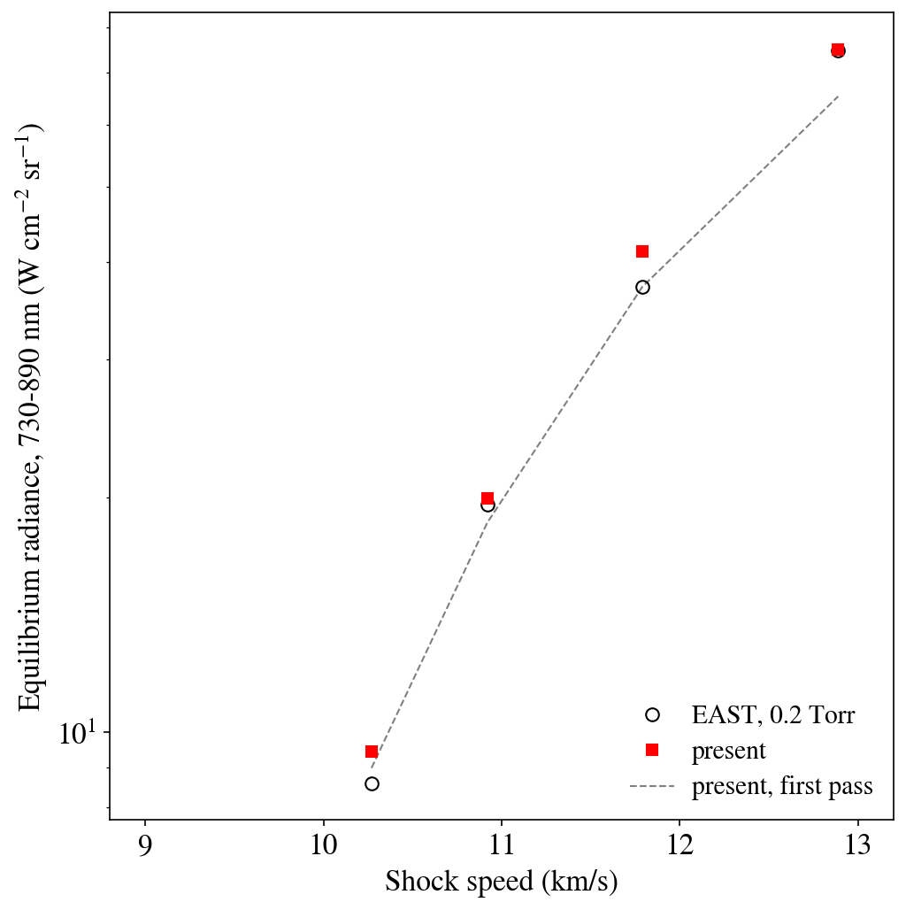
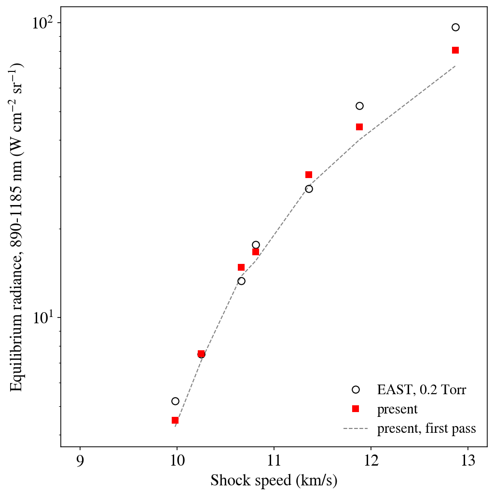
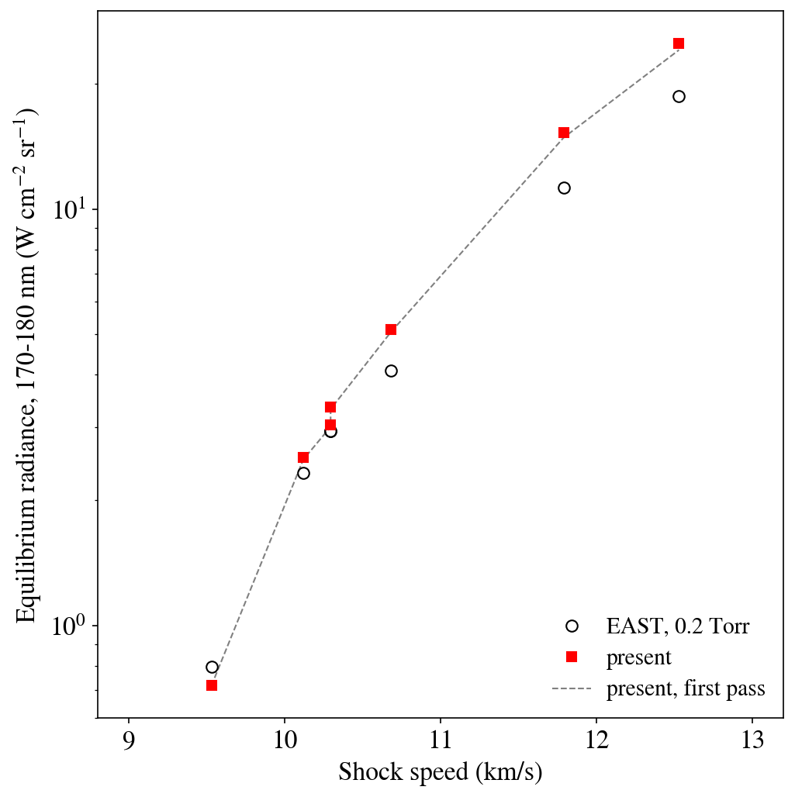
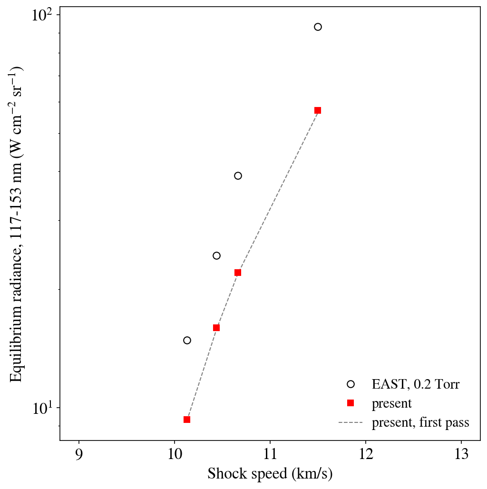
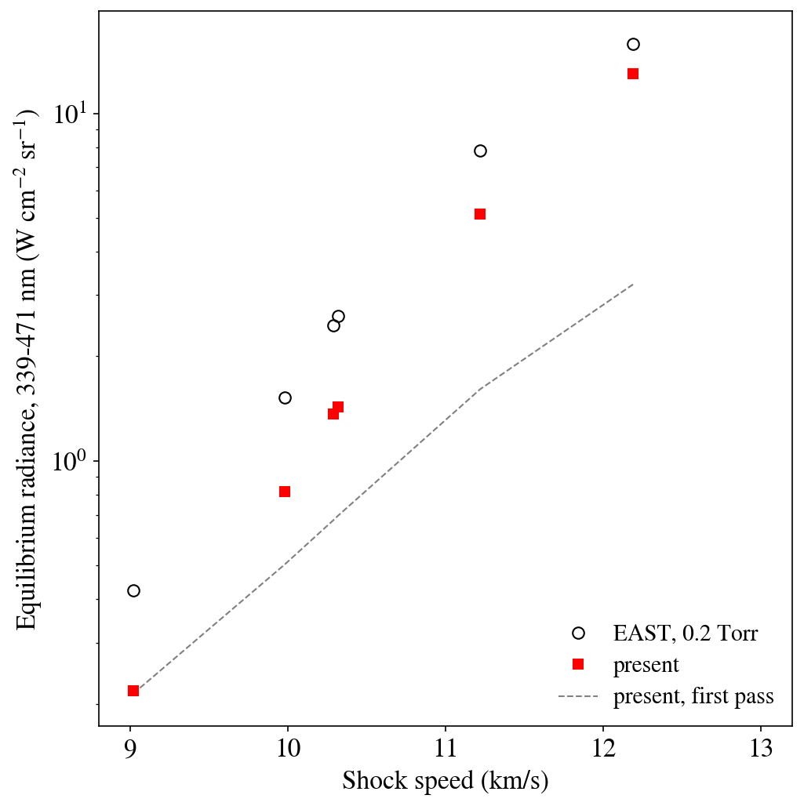
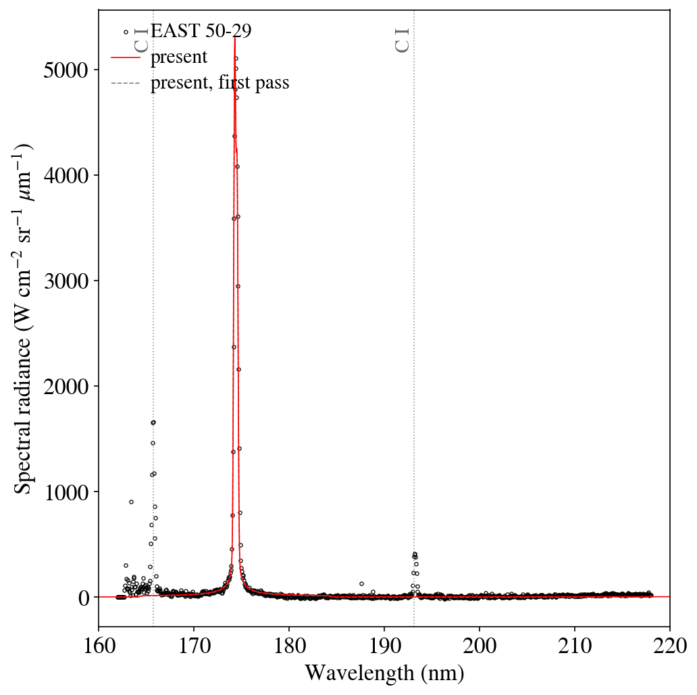
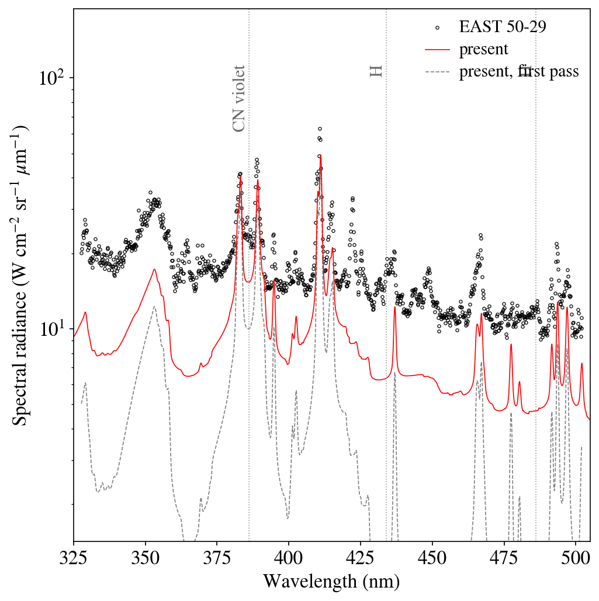

EAST equilibrium columns
See EAST radiance validation for the November 2026 comparison with EAST.
Directory: tutorials/EAST/equilibrium/.
Purpose
The first comparison of radiationFoam with experiment, independent of any gas-kinetic model. Far enough behind the shock, the EAST test gas reaches thermochemical equilibrium, and its radiance depends only on the equilibrium state and on the radiation model. Each case of this tutorial is a uniform column of air at the equilibrium post-shock state of one EAST shot, measured by the instrument of that shot’s camera, and its band radiance is the quantity that Brandis and Cruden (2017) report as the “equilibrium radiance” of the shot.
Physics shown
All air radiators of the database together: N, O, N+, O+ (
atomicLines, NIST ASD 5.12 levels and lines, Johnston 2006 Stark widths for N I and O I, none for the ions) and N2, N2+, NO, O2 (diatomicBands).The continuum (
continuum physical, Continuum radiation): bound-free photoionisation of N and O with N+, O+ as partners (tabulated cross sections) and free-free emission on the ions.Self-absorption across the 10.16 cm column (Radiative transfer).
The EAST instrument line shape of each shot and camera (Instrument model: reproducing a shock-tube measurement): sqrt-Voigt ILS1, Gauss + Lorentz ILS2 or a Gaussian, with the half widths of Brandis and Cruden (2017), Tables C1-C8; band integrals over the benchmark windows; an “equilibrium” spectrum averaged over the column.
The generator: make_cases.py
The directory holds no case: make_cases.py writes them. Its inputs are
eq_states.csvThe equilibrium post-shock state of 24 EAST shots at 0.2 Torr and 300 K fill: shock speed
U_kms,T2_K,p2_Pa, density, velocity, total number density and the number density [m-3] of N2, O2, NO, N, O, N2+, O2+, NO+, N+, O+, e- and Ar. The states are full Rankine-Hugoniot jumps to thermochemical equilibrium with the electron pressure, computed in the DSMC_Rovibronic repository (run/RAD/EAST/equilibrium/eq_states.py; method in itsVALIDATION_EQ_REPORT.md, section 1). For shot 50-29 (10.29 km/s): \(T_2\) = 10 332 K, \(p_2\) = 30.6 kPa, \(n_e\) = 1.20 \(\times 10^{22}\) m-3.- tables inside the script
ATOMS,MOLS: species data (mass, radius, database file, ionisation energy, Stark exponent 0.33);BAND: the benchmark window and grid spacing of each camera (Brandis and Cruden 2017, Figs. 6(a)-14(a));ILS: the benchmark shots of each camera and their line shape (form, \(w_G\), \(w_L\), \(\log_{10} a\));CUT: the historical cutoff values. The current facility dictionaries specify the detector coverage and line shape;SPECTRA: four spectrum cases of shots 50-29 and 57-16 on the full camera ranges.
Camera |
Window [nm] |
Spacing [nm] |
Shots |
|---|---|---|---|
DeepVUV |
117-153 |
0.001 |
57-6, 57-7, 57-8, 57-11 |
VUV |
170-180 |
0.001 |
57-14, 57-15, 50-29, 57-16, 50-93, 57-37, 57-36 |
UVVis |
339-471 |
0.002 |
50-36, 50-59, 50-29, 47-33, 57-41, 57-40 |
VisNIR |
730-890 |
0.003 |
47-37, 50-30, 57-37, 52-20 |
IR |
890-1185 |
0.004 |
50-59, 50-57, 57-8, 50-97, 57-10, 52-19, 52-21 |
Usage:
python3 make_cases.py [variant] # stark | meinel | full (default full)
writes cases_<variant>/<name>/ and the list cases_<variant>/list.txt.
The variants switch the database content on one step at a time, so that each
change has its own column: stark (N I / O I Stark widths, the
N2+ Meinel band removed from a copy of N2plus.dat, no
continuum), meinel (stark plus the full N2plus.dat), full
(meinel plus continuum physical). Fifty cases are written per variant:
spec_<shot>_<camera>(4): spectrum cases on the full camera ranges of 50-29 VUV and UV/Vis and 57-16 VUV and Blue, withwriteSpectra (1)andwriteCoefficients true;bench_<shot>_<camera>(26): one per shot and benchmark camera;diag_50-29_<camera>_<group>(20): the 50-29 state in every benchmark window, using its own camera where available and a representative camera elsewhere, with all species, then neutral atoms, ions and molecules alone (the group cases run without the continuum, which needs every atom with its ion).
One case
Every case is a shockTube1D deck with a 3-cell uniform profile
(\(x\) = 0, 5 and 10 cm, written to constant/profile.csv) at the
equilibrium state, every temperature equal to \(T_2\) and
\(T_e = T_2\), and one camera C. The window is the camera range of the
shot (the detector: since 2026-11-17 the EAST line shapes of the
eastLineShape type span it and are normalised over it; a Gaussian ILS keeps
the benchmark window widened by ten half widths). Abbreviated deck of
bench_50-36_UVVis (long form):
mode shockTube1D;
populationModel boltzmannTemperatures;
continuum physical;
species { N { ... continuumCoeffs { chargeNumber 0; ionSpecies N+;
crossSection tabulated; photoionisationFile ".../N_I_photoionisation.dat"; } }
O { ... } N+ { ... continuumCoeffs { chargeNumber 1; } } O+ { ... }
N2 { ... } N2+ { ... } NO { ... } O2 { ... } }
shockTube1DCoeffs
{
diameter 0.1016;
windows { W { minWavelength 327.7; maxWavelength 502; nPoints 87151; } }
bands { UVVis (339 471); }
profile { source macroFile; file "<case>/constant/profile.csv"; }
writeSpectra none;
writeCoefficients false;
instrument
{
C
{
window W;
spectralResponse { type eastLineShape; lengthUnit nm; form sqrtVoigt;
halfWidthGauss 0.28; halfWidthLorentz 0.07; cutoff 174.3; }
bandUnit nm;
bands { UVVis (339 471); }
shockFront { position 0; band UVVis; upstreamSide low; }
distanceUnit cm;
spectra { eq { average (1 9); } }
}
}
}
Points to note:
No
spatialResponse: on a uniform column the SRF is the identity.shockFront { position 0; }: there is no front in a uniform column, so \(x_0\) is fixed and the distances are simply \(x\) in cm.spectra { eq { average (1 9); } }: the “equilibrium” spectrum is the mean over 1-9 cm, i.e. the uniform column.Gauss + Lorentz shapes take
ratio\(= \min(1, 10^r)\) from the tabulated \(r\); shot 57-37 Vis/NIR prints \(r\) = 0.47, outside the \([0, 1]\) range thateastLineShapeenforces, so \(a\) is clipped to 1.The infrared Gaussian cameras use
type gaussianwith FWHM \(= 2 w_G\).
How to run
cd tutorials/EAST/equilibrium
./Allrun # full variant, one benchmark case per camera
./Allrun meinel # another variant
./Allrun full all # all 50 cases of the variant
./Allclean # removes cases_* and __pycache__
Without all, Allrun runs the five cases bench_57-6_DeepVUV,
bench_57-14_VUV, bench_50-36_UVVis, bench_50-30_VisNIR and
bench_50-59_IR, each in a few seconds (cell loop 1-2 s and measurement
3-5 s CPU in the logs of the same decks).
Output
Per case, in postProcessing/radiationFoam/ (Post-processing):
bands.csv: raw band radiance per cell [W m-2 sr-1];profile.csv: the cell states;instrument_C_bands.csv: the measured band radiance [W cm-2 sr-1] per cell; on a uniform column every row is the equilibrium radiance of the shot;instrument_C_spectra.csv:lambda_nmand theeqspectrum [W cm-2 sr-1 µm-1];spec_*and thealldiagnostics also writespectra_W.bin,emission_W.bin,absorption_W.binand.infofor cell 1.
Earlier equilibrium comparisons
The figures in this section document the earlier benchmark passes. The latest
comparison is reported in EAST radiance validation. The earlier scripts are kept with the
EAST data in the DSMC_Rovibronic repository
(run/RAD/EAST/equilibrium/compare_pass2.py, digitised benchmark values
and calibrated EAST data cubes in run/RAD/EAST/). They read
instrument_C_bands.csv (one value per case) and
instrument_C_spectra.csv, and plot the equilibrium radiance against the
shock speed of each shot. The figures below were produced from the
cases_full decks generated by the same make_cases.py and
eq_states.csv (VALIDATION_EQ_REPORT.md, section 7: “second pass”). Present
results are red; EAST is black; the grey dashed line is the first pass, run
before the continuum and the N2+ Meinel band were in the
database.
 |
 |
 |
 |
 |
 |
Equilibrium radiance against shock speed (Vis/NIR 730-890 nm, IR 890-1185 nm, VUV 170-180 nm, Deep VUV 117-153 nm, UV/Vis 339-471 nm), and the equilibrium VUV spectrum of shot 50-29 against the EAST data cube (C I impurity lines marked).
Expected result
Present / EAST, per window, shock speed rising (VALIDATION_EQ_REPORT.md, section 7.2):
Window |
present / EAST |
Geometric mean |
|---|---|---|
Vis/NIR 730-890 nm |
1.10, 1.02, 1.11, 1.00 |
1.06 |
IR 890-1185 nm |
0.86, 1.01, 1.11, 0.94, 1.12, 0.85, 0.83 |
0.95 |
VUV 170-180 nm |
0.90, 1.09, 1.04, 1.14, 1.26, 1.36, 1.34 |
1.15 |
Deep VUV 117-153 nm |
0.63, 0.66, 0.57, 0.61 |
0.62 |
UV/Vis 339-471 nm |
0.51, 0.54, 0.56, 0.55, 0.65, 0.82 |
0.60 |
The Vis/NIR and IR windows, dominated by N I and O I lines, agree with EAST within its 30 % calibration uncertainty at every shot. The VUV 170-180 nm window agrees up to about 10.7 km/s and is 26-36 % high above. The Deep VUV is 40 % low: its saturated resonance lines radiate from their wings, which are cut at 100 times the larger of the Lorentz and Doppler widths, and many lines have no Stark width. The UV/Vis window is 1.2-2 times low: half of its radiance at 50-29 is the continuum, and the remaining continuum deficit is the open item of that report.
Since 2026-11-16 the photoionisation cross sections of N I and O I are the
R-matrix values of Nahar and Pradhan (1997) and Nahar (1998) (the O table of
the former data was misaligned as printed): UV/Vis 0.52, 0.57, 0.60, 0.59,
0.71, 0.88 (geometric mean 0.63), Vis/NIR 1.06, IR 0.96, VUV 1.12, Deep VUV
0.62 (geometric means). The attribution of the remaining UV/Vis deficit to
every published candidate (lines without an ASD transition probability, O- photodetachment, dissolved levels, electron-neutral free-free) and
to the EAST side is in docs/reports/CONTINUUM_UV_20261116.md.


Equilibrium UV/Vis (“Blue” camera) spectrum of shot 50-29: present (red), EAST data cube (black), first pass (grey); impurity features (CN violet, H lines) marked.
References
Brandis, A. M. and Cruden, B. A., “Benchmark Shock Tube Experiments of Radiative Heating Relevant to Earth Re-entry,” 55th AIAA Aerospace Sciences Meeting, AIAA Paper 2017-1145, 2017. doi:10.2514/6.2017-1145
Cruden, B. A. and Brandis, A. M., “Measurement of Radiative Nonequilibrium for Air Shocks Between 7 and 9 km/s,” Journal of Thermophysics and Heat Transfer, 34 (1), 154-180, 2020. doi:10.2514/1.T5735
Johnston, C. O., Nonequilibrium shock-layer radiative heating for Earth and Titan entry, PhD thesis, Virginia Polytechnic Institute and State University, 2006.
Kramida, A., Ralchenko, Yu., Reader, J. and NIST ASD Team, NIST Atomic Spectra Database (version 5.12), National Institute of Standards and Technology, Gaithersburg, MD, 2024. doi:10.18434/T4W30F